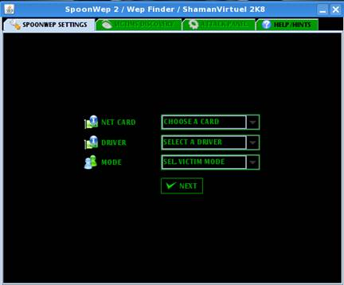
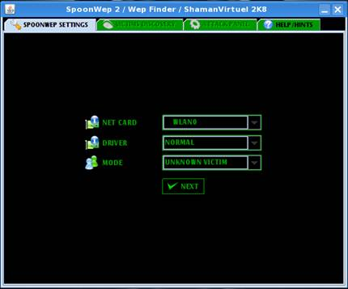
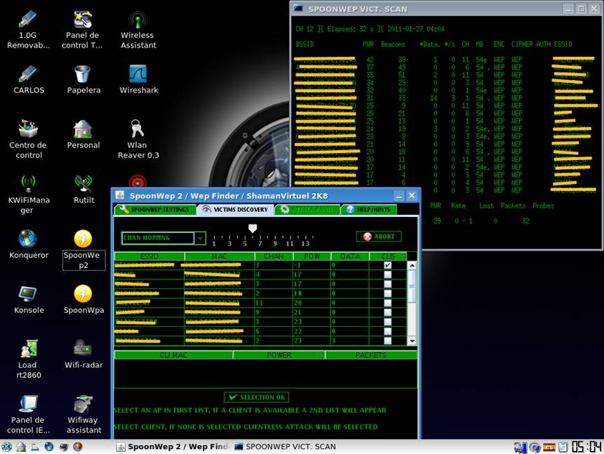
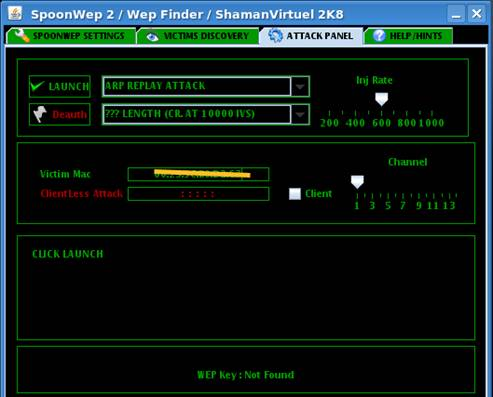
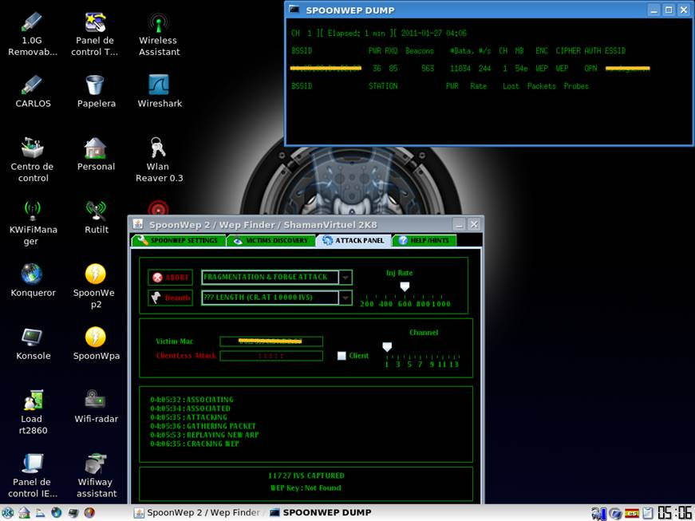
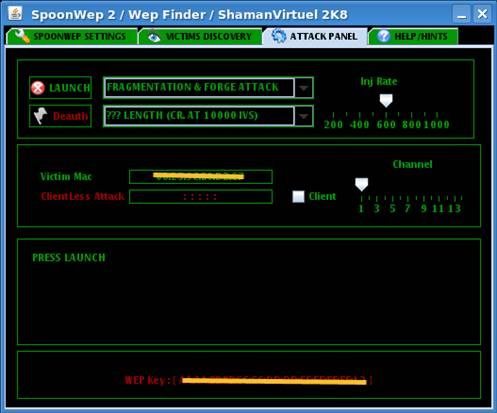

SpoonWep 2
Esta utilidad es muy sencilla de utilizar y con muy buenos resultados.
Empezamos arrancando la utilidad, entonces obtenemos la siguiente imagen, donde aparecen unos valores por defecto, que debemos cambiar y configurarlos dependiendo de la tarjeta que tengamos.


En donde pone CHOSE CARD debemos seleccionar la tarjeta nuestra en mi caso WLAN0.
En donde pone SELECT A DRIVER salvo que tengamos una tarjeta con chip de Atheros debemos seleccionar NORMAL.
Y donde pone SEL VICTIM MODE pondremos UNKNOWN VICTIM
Y pulsamos NEXT.
Pasaremos a la siguiente pantalla en la que debemos pulsar en el botón que pone LAUNCH y tras esperar un poco nos aparecen las redes que tenemos a nuestro alcance como podemos ver en la siguiente pantalla.

En la columna CLS vemos que hay una casilla con una V, quiere decir que tiene al menos un cliente asociado, si la seleccionamos aparecerá en la parte inferior los datos del cliente. Pero nosotros en esta ocasión como tenemos el otro ordenador apagado, no nos aparece nuestra red con cliente asociado, será un obstáculo pero no un impedimento para ver la clave.
Seleccionamos nuestra red y pulsamos el botón SELECTION OK y pasaremos a la siguiente pantalla.

Como podemos apreciar en la casilla Client Less Attack, no hay un cliente con el que atacar por eso el recuadro aparece vacío, en caso contrario nos aparecería la mac del cliente seleccionado.Donde pone ARP REPLAY ATTACK podemos seleccionar el tipo de ataque que queremos realizar, yo en este caso en vez del que viene por defecto he seleccionado el de FRAGMENTATION & FORGE ATTACK.
Y ya solo nos queda pulsar el botón donde pone LAUNCH.
Y veremos que empieza el ataque a la red.
Primero se asocia a la red.
Segundo inicia el ataque.
Tercero recoge paquetes y empiezan a subir las datas.
Y por ultimo reinyecta los paquetes de nuevo, si nos fijamos en la siguiente imagen, podemos observar en la parte superior derecha los datos del ataque, en donde podemos ver que en el momento de realizar la captura de la imagen, se esta realizando una reinyección de datos al MODEM de 244 datas por segundo, aunque en ciertos momentos llego 460 datas por segundos. También vemos que tenemos una potencia del MODEM de 36 con mi adaptador con pasar de 30 es suficiente para realizar un buen ataque de hecho se puede ver que en 1 minuto hemos capturado 11.834 DATAS.
En la parte inferior de la imagen podemos ver que ya ha empezado a buscar la clave se sabe porque se añade la línea que pone CRACKING WEP, ya que ha partir de 10.000 datas empieza a buscar la clave y continuara hasta que la encuentre.

Por ultimo podemos ver en la imagen de abajo, como al final ha conseguido sacar la clave el SpoonWep, solo nos la da en hexadecimal, así que si queremos pasarla a ASCII deberemos usar una tabla de conversión, ó también lo podemos hacer en Windows, con Microsoft Word en insertar símbolo, nos sale para poder ver cualquier símbolo, en hexadecimal ó en ASCII.

¡OJO! La clave en hexadecimal se pone sin los dos puntos de separación.